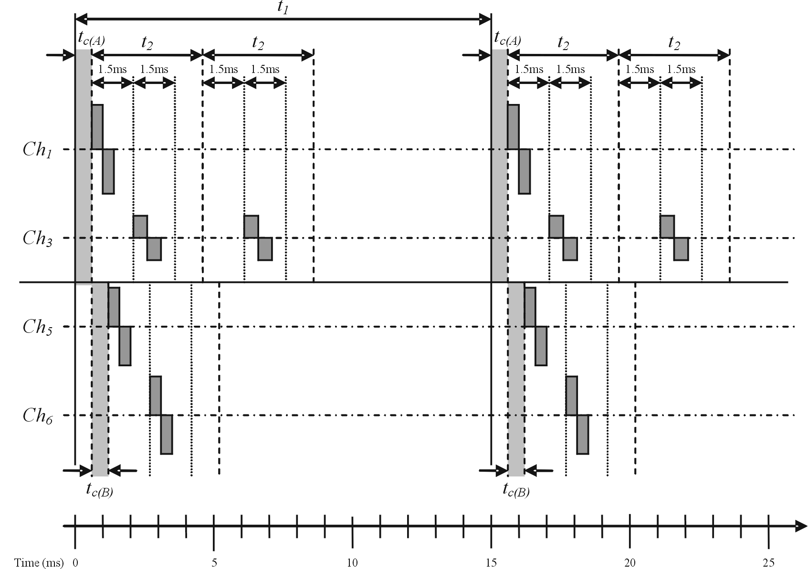

Stimulator communication block.
Library
Hasomed Block Set
Description
The Stimulator Interface block is used to operate an electrical stimulation device. This block uses the standard communication protocol from ScienceStim. The RehaStim by Hasomed GmbH supports this protocol.
Connecting the Stimulator to the PC
The ScienceStim protocol expects the stimulator to be connected to a PC over a serial port style connection.
Using a USB Cable
The RehaStim by Hasomed is connected to a PC via a USB cable. The USB port should be configured as a virtual com port (VCP) using the correct driver. This driver can be downloaded from Future Technology Devices International Ltd. selecting the FT232BM driver from the list associated with the correct platform.
Once the correct drivers are installed the USB port can be set up as if it was a normal serial port.
Serial Port Connection Parameters
The com port should be set up with the following parameters - as defined by the ScienceStim protocol:
Baud Rate (Bits per Second)
| 115200 |
Data Bits
| 8
|
Parity
| None
|
Stop Bits
| 1
|
Flow Control
| None
|
Inputs and Outputs
- Current
-
This input should be an array of values representing the currents desired on the channels specified in the block parameters. Thus if the specified channels are [1 5 6] then there should be 3 inputs into this port, the first being for the stimulation channel 1 the second for stimulation channel 5 and the last for stimulation channel 6.
- Pulsewidth
-
Similar to the current this input should also be an array of values, representing the pulsewidths desired on the channels specified in the block parameters.
- Mode
-
Similar to the current this input should be an array of values representing the mode desired for each channels specified in the block parameters. The value of the mode should be either 0, 1 or 2:
- 0 is for singlet stimulation pulses.
- 1 is for doublet stimulation pulses.
- 2 is for tripplet stimulation pulses.
- Mute Period [ms]
-
This output is used to let other devices know when the stimulator is sending a pulse and will last for 1.5 ms. An example of this would be if muscle EMG measurements were being taken, the EMG amplifier may be strongly effected by the stimulation pulses and so should be muted. It is advisable to take this signal directly from the stimulator (to avoid the processing time of the software) - please consult your stimulator documentation or technical support. The block output can be used to know when the stimulator is sending this mute signal (thus when other signals being read into simulink maybe being mutted).
Parameters and Dialog Box
- Sample Time:
-
This is the sample time of the block itself, which is not necessarily the same as the stimulation frequency.
- Serial Port:
-
This is used to select the com port that is connected to the stimulator.
- Channels to be Stimulated:
-
An array of channel numbers to be stimulated. A channel number may only appear once in the list but the list can be in any order. The inputs into the block should also be arrays of the same length with the desired values for the channel in the corresponding element.
- Main Time in ms (only in steps of 0.5ms):
-
This should be set to the stimulation pulse period. For example, if a stimulation frequency of 50Hz is desired then this value should be set to 20ms. This parameter can be set to 0ms to activate the external triggering of the stimulation pulse (or pulse group). In this case the channels listed in the "Channels to be Stimulated" parameter will all be triggered each time this block is evaluated. There is a minimum limit on this value defined by the Group Time and by the maximum mode input:
Main Time >= 1.5 +[Group Time]* (1 + max(Min))
Where the 1.5 is to cover the computation time required, and Min is the mode input list (an array of either 0, 1 or 2 with an element for each channel). Please see the example below to help understand this limit.
- Group Time in ms (only in steps of 0.5ms):
-
This parameter is the time between pulses in a doublet or triplet group. There is a minimum limit for this value as defined by:
Group Time >= 1.5*max(nChA, nChB)
Where nChA and nChB are the number of channels being used in modules A and B respectivly. Please see the example below to help understand this limit.
- Low Frequency Channels:
-
It is possible to set some channels to use a much lower frequency than the main frequency dictated by the Main Time parameter. This is a useful feature when applying a mixed reflex and muscle stimulation pattern. The values listed in this parameter must also be listed in the "Channels to be Stimulated" parameter.
- Low Frequency Factor:
-
Rather than send a pulse (or pulse group) every time a channel is triggered, a pulse could be sent every nth time it is triggered. Thus n is the Low Frequency Factor.
Example and Diagram of Stimulation Pulses
An example of the stimulation pulses can be seen in the following diagram:

The dark grey rectangls show the stimulation pulses. There are 4 channels being stimulated (Ch1, Ch3, Ch5 and Ch6) so the "Channels to be Stimulated" parameter = [1 3 5 6]. Channels 1 and 3 are on stimulation module A and channels 5 and 6 are on module B. The processor communication with each module takes 0.6ms (tc(A) for module A and tc(B) for module B) and is shown as the light grey areas. Modules A and B can work concurently except for the communication with the main processor (thus a 0.6ms delay in module B).
The stimulation channels within each module are triggered sequencially and each channel is allocated a 1.5ms slot within which the pulse will be completed. This means that stimulation frequency integrity is maintained even when changing the pulsewidth of one or more channels. The modules deal with the first pulse of each channel before moving onto the second pulse in pulse groups (doublets and triplets). In this example only channel 3 is using a pulse group (doublets) the other channels are just using single pulses (the mode input into the block is [0 1 0 0]). The "Group Time" parameter is the time between pulses in a group and in the diagram is shown as t2 (4ms). Note that when module A processes the second pulses, the 1.5ms allocation for each channel remains the same (so Ch1 is still allocated the first 1.5ms before Ch3 even though Ch1 is not producing a pulse).
This means that there is a minimum limit for the Group Time parameter, based on the number of channels being stimulated in each module:
t2 >= 1.5*max(nChA, nChB)
Where nChA and nChB are the number of channels being used in modules A and B respectivly. In this example the lowest limit for Group Time is 1.5*max(2, 2) = 3ms.
The overall frequency of the stimulation is input using the Main Time parameter. In the example this has been set at 15ms (66.67Hz) and shown in the diagram as t1. This is also subject to a minimum value:
t1 >= 1.5 +t2* (1 + max(Min)
Where the 1.5 is to cover the computation time required, and Min is the mode input list (an array of either 0, 1 or 2 with an element for each channel). In this example the lowest value for Main Time is 1.5+4*(1+max([0 1 0 0])) = 9.5ms (= 105.3Hz).
| Documentation by Benjamin Saunders (July 2006): Hasomed GmbH |